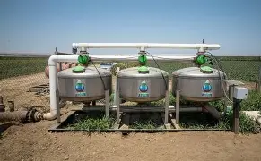
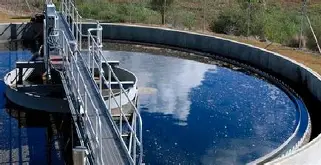
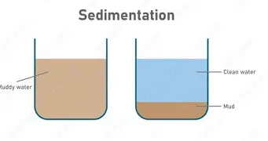
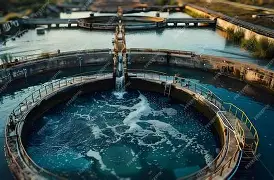
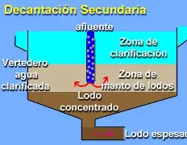
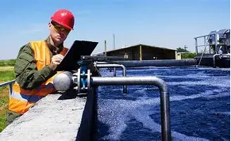
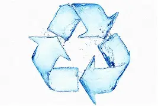

🎥 Videos Educativos Sobre los Daños Ambientales en Bolivia
Desastres ambientales en Bolivia
No destruyas el Medio Ambiente, cuídalo
7 Problemas Ambientales y Cómo Solucionarlos
Una pequeña acción demuestra que te importan nuestros ríos y bosques
💡 Ahorrar Energía

Paso 1: Recolección del agua usada

Paso 2: Pretratamiento

Paso 3: Sedimentación primaria

Paso 4: Tratamiento biológico

Paso 5: Sedimentación secundaria

Paso 6: Filtración

Paso 7: Desinfección

Paso 8: Reutilización